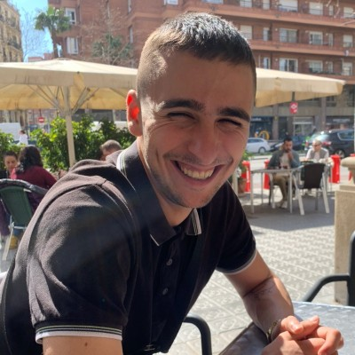

100% generado.
Cada frame de arriba se construyó sin cámara, sin set y sin día de rodaje. Las herramientas van a seguir cambiando — me mantengo informado cada día.
Al leer vuestra oferta vi claro que me hablabais a mí. Llevo desde los inicios de la IA aprendiendo, probando y manteniéndome activo con todas las herramientas y flujos de trabajo.
La IA produce rápido. Yo decido qué merece la pena producir. Dirijo sistemas generativos en cada fase de la producción — del brief al color final — y dejo al equipo capaz de moverlos sin mí.
He visto vuestra oferta de AI Creative Lead en Play Your Brand y me he visto reflejado punto por punto.
Actualmente sigo en Wild Food, dentro del equipo de marketing, liderando toda la estrategia y producción de contenido y branding con IA. Trabajo hombro con hombro con creatividad, producción y estrategia — no en silo. Un sitio que me ha dado una oportunidad buenísima para desarrollarme como profesional. Pero hace tiempo que sigo lo que hacéis en Play Your Brand, y vuestra oferta me ha removido algo por dentro.
Soy Lluc Domenech Costa, 25 años. Diseñador gráfico de La Massana y recién salido del Máster en Branding y Estrategia de Marca de SHIFTA (ELISAVA). Esa base — creativa y estratégica — es lo que me diferencia cuando trabajo con IA.
Llevo más de 4 años con IA generativa, desde los primeros modelos. En Wild Food he construido desde cero los flujos que hoy generan, adaptan y publican contenido de forma automática — imagen, vídeo, ads, UGC, blog, web — y llevo un año afinándolos. También produzco motion graphics generados por código con Remotion + Claude Code, cuando la pieza lo pide. Por el camino he evaluado casi todo el mercado, medido coste real por output, y ayudado a otras empresas a meter IA dentro de sus procesos.
Mi set de trabajo. Lo reviso cada semana.
Suite de edición
Una selección de los últimos proyectos. La IA avanza a ritmo de vértigo — lo de hace 2 meses ya no es comparable. Haz clic en cualquier tarjeta.
Cada frame de arriba se construyó sin cámara, sin set y sin día de rodaje. Las herramientas van a seguir cambiando — me mantengo informado cada día.
Flujos completos de producción — personalizados y adaptados a las necesidades de cada equipo.
Hoy puedo automatizar casi cualquier proceso repetitivo. Empecé en 2022 con GPT + n8n — moodboards, renombrado de archivos, subidas a CMS. Cambié a Claude + n8n cuando la escritura se afinó, migré los flujos calientes a agentes de Claude Code, y ahora sostengo CLIs propias encima. No-code donde encaja, scripting donde se lo gana. Lo que era un día de trabajo manual ahora es un comando — y documento cada flujo para que el equipo entero lo use, lo entienda y lo mejore sin depender de mí.
Set de skills y bots que mantengo yo — dirección, DP, fotografía, packaging. Cada uno invoca el modelo adecuado para ese trabajo y escribe metadatos en la ficha del proyecto. Herramientas del área de IA, vivas y versionadas.
$ claude skill invoke dp --project=next-fuel
Un bot revisa cada entregable contra la biblia de marca: consistencia de personaje, paleta, LUT, captions y safe-zones. Marca lo que no pasa y propone el fix en el mismo frame. Ciclos de aprobación ↓ 70%.
$ studio qc ./delivery --bible=wild.yml
Cada mañana un agente barre TikTok, Twitter y Reddit, analiza los temas calientes y tendencias del día, y entrega un briefing editorializado al equipo antes del standup. El estudio entra al día sabiendo qué se está moviendo fuera.
$ studio trends morning --sources=tiktok,twitter,reddit
Estos son solo algunos de los ejemplos que podríamos aplicar. Me encantaría sentarme con vosotros, entender cómo trabajáis en Play Your Brand y diseñar desde ahí — no trasplantar los míos, diseñar los nuestros.
De La Massana a Wildfood — diseño gráfico, packaging, emprendimiento, branding y marca. Cada paso ha sido la misma obsesión con otro soporte: construir sistemas de marca que aguantan escala.
